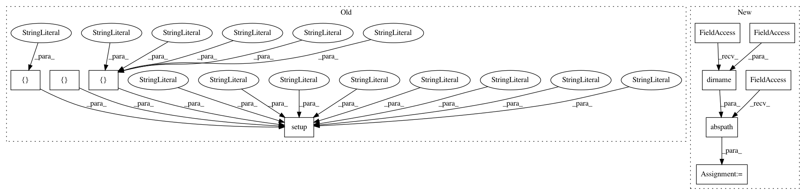

9744450345d3f15d1bcd719e437641437634734a,setup.py,,,#,3
Before Change
from setuptools import setup
setup(
name="OSM-Crosswalk-Detection",
version="0.1.3",
author="Buehler Severin and Kurath Samuel",
maintainer="Marcel Huber",
maintainer_email="marcel.huber@hsr.ch",
description="Crosswalk detection on orthofotos.",
license="MIT",
keywords="crosswalk detection",
url="https://github.com/geometalab/OSM-Crosswalk-Detection",
packages=[
"src",
"src.base",
"src.data",
"src.detection",
"src.detection.deep",
"src.role"],
install_requires=[
"rq",
"geopy",
"pillow",
"fake_useragent",
"httplib2",
"django-environ"],
setup_requires=["flake8"],
test_suite="tests",
tests_require=["nose"],
classifiers=[
"Development Status :: 4 - Beta",
"Environment :: Console",
"Intended Audience :: Developers",
"License :: OSI Approved :: MIT License",
"Natural Language :: English",
"Operating System :: POSIX :: Linux",
"Programming Language :: Python",
"Programming Language :: Python :: 2.7",
"Topic :: Scientific/Engineering :: GIS",
"Topic :: Scientific/Engineering :: Image Recognition",
"Topic :: Scientific/Engineering :: Visualization"],
)
After Change
package = "src"
here = os.path.abspath(os.path.dirname(__file__))
with codecs.open(os.path.join(here, package, "__init__.py"),
encoding="utf8") as version_file:
metadata = dict(
re.findall(
In pattern: SUPERPATTERN
Frequency: 3
Non-data size: 10
Instances
Project Name: geometalab/OSMDeepOD
Commit Name: 9744450345d3f15d1bcd719e437641437634734a
Time: 2016-05-04
Author: marcelhuberfoo@gmail.com
File Name: setup.py
Class Name:
Method Name:
Project Name: cjhutto/vaderSentiment
Commit Name: 1f978867fb18cfe1f645434c3f1de720ab77e342
Time: 2016-12-09
Author: cjhutto@gatech.edu
File Name: setup.py
Class Name:
Method Name:
Project Name: tensorlayer/tensorlayer
Commit Name: 6d9a2026ed5b80b24c6e3262f1dfc9380d90aa24
Time: 2018-04-16
Author: contact@jonathandekhtiar.eu
File Name: setup.py
Class Name:
Method Name: